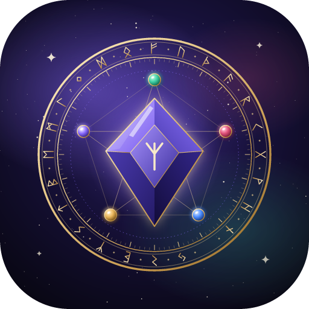

Конфиденциальность
Оберег — семейный мессенджер
Обновлено: 29 октября 2026 года
Оберег — закрытый мессенджер для одной семьи. Им пользуются только приглашённые родственники. Все данные хранятся на домашнем компьютере семьи, который служит сервером. Разработчик не продаёт, не передаёт и не использует данные для рекламы.
Какие данные мы получаем
- При входе через Google: имя, адрес электронной почты и идентификатор аккаунта Google. Они нужны только чтобы узнать вас при следующем входе. Пароль от Google приложение не получает.
- То, чем вы делитесь: сообщения, фотографии, видео и голосовые сообщения — хранятся на сервере семьи, чтобы их получили участники чата.
- Служебное: время последнего появления в сети и техническая информация, нужная для доставки сообщений и уведомлений.
Как данные защищены
- Передача данных между телефоном и сервером зашифрована (TLS).
- Звонки и видеозвонки защищены сквозным шифрованием: их не может прослушать даже сервер.
- Файл видят только участники чата, в который он отправлен.
- Резервные копии зашифрованы (AES-256).
Кому передаются данные
Никому. Данные не передаются третьим лицам, не продаются и не используются для рекламы или аналитики. Google участвует только во входе (подтверждает ваш аккаунт).
Удаление данных
Свои сообщения можно удалить у всех прямо в приложении. Чтобы удалить аккаунт и все данные, напишите хранителю круга или на deniskaivano@gmail.com — данные будут удалены с сервера.
Дети
Оберег предназначен для семьи. Дети пользуются им по приглашению и под присмотром взрослых членов семьи.
Контакты
Вопросы о конфиденциальности: deniskaivano@gmail.com